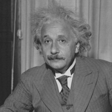

阿尔伯特·爱因斯坦（Albert.Einstein，1879年3月14日—1955年4月18日），出生于德国符腾堡王国乌尔姆市，毕业于苏黎世大学，犹太裔物理学家。
爱因斯坦1879年出生于德国乌尔姆市的一个犹太人家庭（父母均为犹太人），1900年毕业于苏黎世联邦理工学院，入瑞士国籍。1905年，获苏黎世大学哲学博士学位，爱因斯坦提出光子假设，成功解释了光电效应，因此获得1921年诺贝尔物理奖，1905年创立狭义相对论。1915年创立广义相对论。1955年4月18日去世，享年76岁。
爱因斯坦为核能开发奠定了理论基础，开创了现代科学技术新纪元，被公认为是继伽利略、牛顿以来最伟大的物理学家。1999年12月26日，爱因斯坦被美国《时代周刊》评选为"世纪伟人"。
爱因斯坦发表"量子论"，提出光量子假说，解决了光电效应问题，创立了狭义相对论、广义相对论等 获得诺贝尔物理学奖，参加反战和平运动，代表作品 《非欧几里德几何和物理学》《统一场论》《我的世界观》。